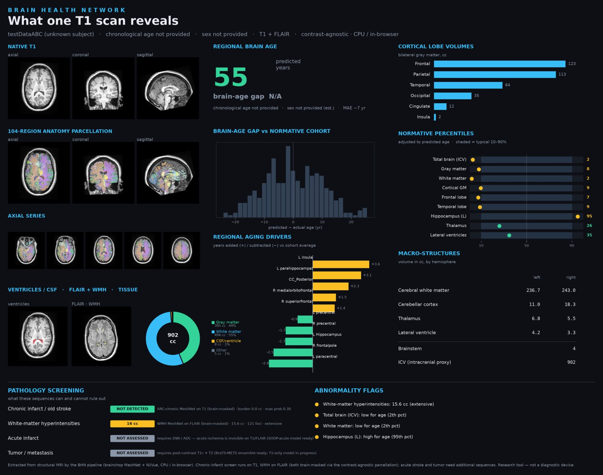

One of those projects that started as a figure-generation convenience and quietly became a product. Brain Health Network (BHN) takes a single T1-weighted MRI (optionally paired with a FLAIR) and emits a one-page clinical-style readout that a radiologist could glance at in ten seconds and understand everything the sequence is capable of telling them. The whole pipeline runs in a browser tab on commodity CPU. No upload. No account. No PACS integration.
The page above is a real BHN output. From a single T1 it extracts a 104-region parcellation, computes a regional brain-age estimate with a mean absolute error of about seven years, shows that estimate against a normative cohort distribution, breaks the brain into cortical lobe volumes, computes the normative percentile for every macro-structure, and ranks the regions pushing the age estimate up versus down. Then it runs the pathology screens that T1 (and when present, FLAIR) can honestly support: chronic infarct via the ARC MeshNet, white-matter hyperintensities via a WMH MeshNet, and acute-infarct and tumor flagged as "NOT ASSESSED" with a note on which sequences would be needed. The report ends with abnormality flags, so a reader can navigate from headlines to detail.
Two design choices I keep defending. First, contrast-agnostic parcellation: the models were trained to produce the same label map regardless of T1 vendor, scanner, or contrast quirks. That matters because the use case is "a scan arrives from somewhere else," not "a scan comes out of our own protocol." Second, honest about what it cannot do: every panel that would need a sequence the user did not upload says so, in plain language, with the reason. "Acute infarct NOT ASSESSED, requires DWI/ADC" is more useful to a clinician than a quiet shrug.
BHN is the serving layer underneath several things we have shipped this year: the brain-mets segmentation BraTS entry (where it provides the anatomy and tissue context around the tumor); a planned longitudinal viewer for ABC and C-STAR cohort subjects; and an early version of the open-neuroimaging tooling for the C-STAR team's chart reviews. The research version is private; a wider release depends on the usual DUA sign-offs. If you work in neuroimaging and want a demo, email me.